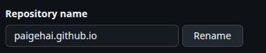
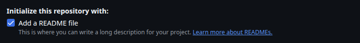
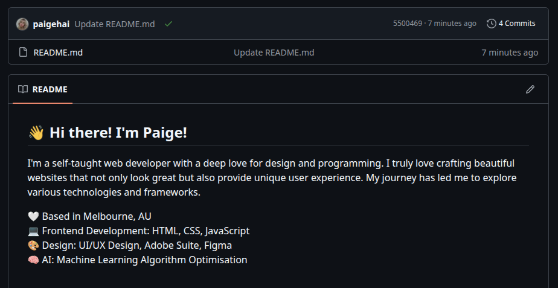
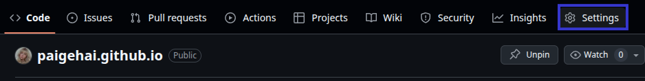
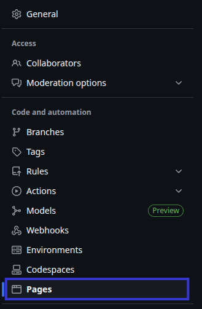
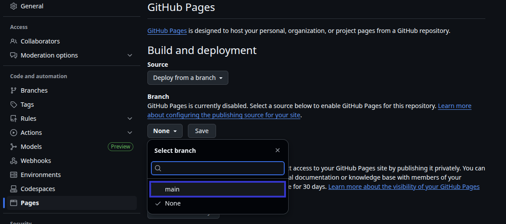
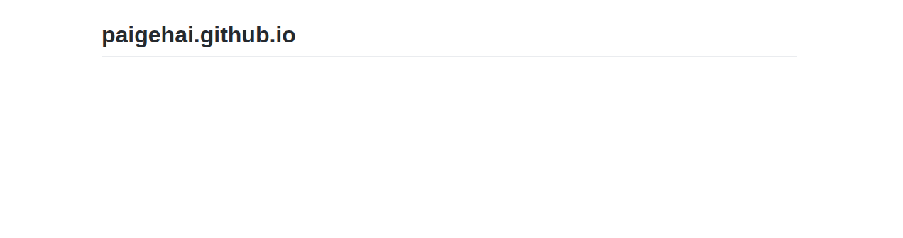
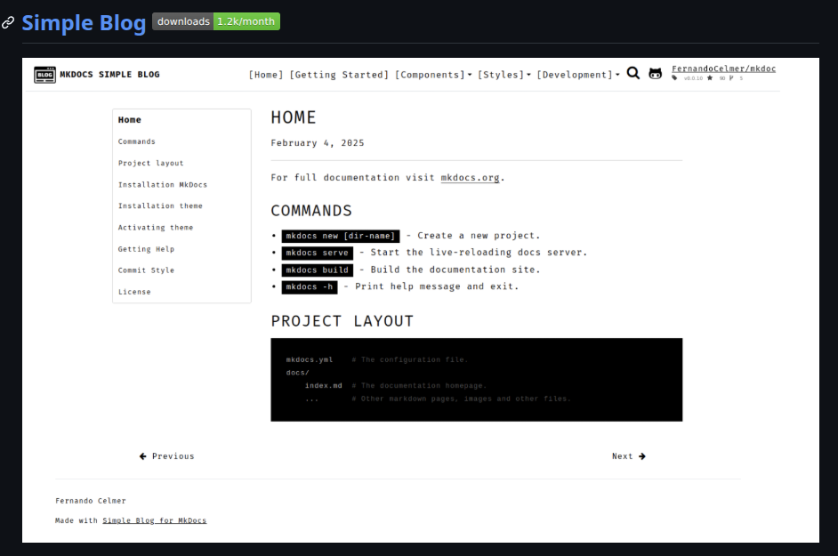
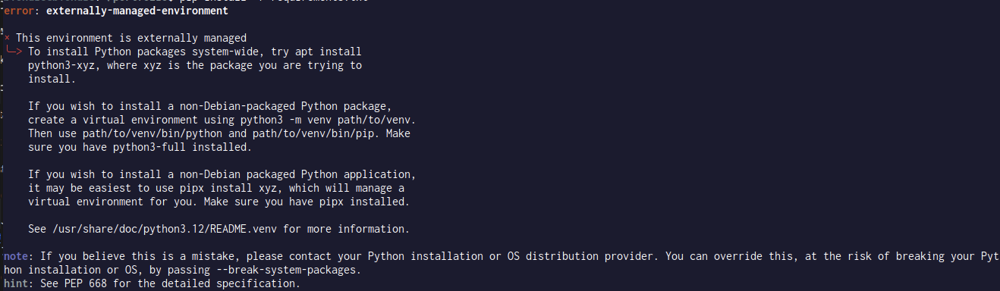

A Cheat Sheet on How to Create Your Own GitHub Pages Portfolio
June 17, 2025
After a close friend of mine had introduced me to GitHub pages through her own portfolio (shout out to you, Brianna!), I quickly became hooked on the idea of creating my own portfolio from scratch! Taking note of my walkthrough in making my portfolio was both for my own reference, and so I am able to guide others on how to create their own portfolio's. What good is knowledge if you cannot share it!
In this guide, I provide step-by-step instructions, including code snippets, that you can use to create your own GitHub Pages portfolio, and maintain it. This is the method I have found to be most convenient, however, I always encourage others to challenge my process (and let me know if you find something even better that I can implement!).
Please note: this guide has been created using MKDocs and their Simple Blog theme, so if you have chosen another, then this process may not work as effectively.
Step 1: Create Your GitHub Repository
To get started on my portfolio, I needed to create a GitHub repository. To ensure it works as expected, you must include .github.io in the repository name.
For mine, I chose: paigehai.github.io.

Before clicking Create Repository, make sure Add a README file is checked.

Once this had been created, I proceeded to populate the repository with my default GitHub README.md file.

Once you have created your repository, and have added a simple README.md file, navigate to the Settings tab in the repo.

Navigate to the Pages tab in the left panel.

To deploy this current version of the website, we must select the main branch, under the Branch selection in the right panel.

You will now have a basic website that you can visit!

Step 2: Build the Website
Method 1: Using the command's provided by Fernando Celmer
The theme that I chose for my website was Simple Blog by MKDocs.

Fernando Celmer's GitHub page provides a simple guide for how to install the template which I will outline below.
To install MKDocs, run the following command from the command line (in the directory you want your portfolio in):
pip install mkdocsOnce you have installed MKDocs, you can now install the theme using PIP:
pip install mkdocs-simple-blogAfter the theme has been installed, edit the mkdocs.yml file and set the theme name to simple-blog:
theme:
name: simple-blogOnce completed, you can now move onto Step 3! If you had any trouble executing the above commands, read below.
Method 2: The Paige Way
It is just my luck that I ran into some errors running these commands (maybe Linux, or just my skillset?).

If you also have issues, I have found an alternative method which begins by installing PIPX globally.
sudo apt install pipxOnce this is installed, proceed with the global MKDocs installation.
pipx install mkdocsInjected the selected theme into the pipx-managed MKDocs installation using:
pipx inject mkdocs mkdocs-simple-blogStep 3: Maintain the Website
Once you have successfully installed MKDocs and the site template, create a new project:
mkdocs portfolioThis will initialise the following files:
portfolio/
├── docs/
│ └── index.md # Your homepage content
└── mkdocs.yml # Main configuration fileOnce all of these steps have been completed, change into the appropriate directory:
cd portfolio build the site
mkdocs buildmkdocs serveYou are now able to view the website at http://localhost:8000/. This is the time where you can really challenge both your creativity and your development skills, as you can now start to build your website using the template as a base.
I found adding an
extra.cssfile, and images folders really helped me manage my backend. It also helped me refine my markdown skills, as my brain has been in Python development mode over the first half of the year.
Implement a Deployment Script
When I was editing my website, I found that manually inputting commands became incredibly time-consuming. In addition, sometimes pages wouldn't update and elements I added weren't being reflected. This became a task as I really needed a reliable method to deploy the website without facing issues of backdated content.
So, I created a simple script titled deploy.sh in the same directly as my portfolio, that you can implement if you created your site using MKDocs. This script allowed me to update my master branch and keep the content to the most recent version. It has saved me many hours of banging my head against my desk, that's for sure!
#!/bin/bash
# Stage all changes
git add .
# Commit with message
git commit -m "Update docs"
# Push changes to master or main depending on your main branch
git push origin master/main
# Build and deploy to GitHub Pages
mkdocs gh-deploy --clean --forceTo execute the script, ensure that you have execute permissions.
chmod +x deploy.shTo execute the script, you now simply need to execute:
./deploy.shWhen you run the script, GitHub will ask you to log in using your username and password. When entering your password, ensure you have set up a Classic token in GitHub, and use this, otherwise if you have MFA (like myself), you will receive an error.
Once you have completed all of the above, congratulations! 🎉 You are now able to start maintaining your own portfolio website and update it as you see fit! (I will literally be using this method to upload this very blog post!).